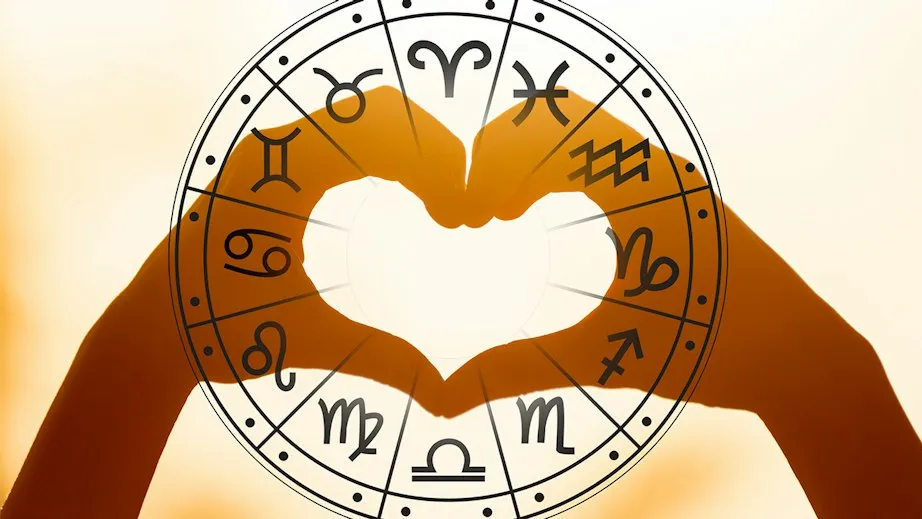

Dette er din plan for din dag, baseret på dit stjernetegn
Du får en velfortjent dag, med en masse gifflar
Prøv ikke at være så irriterende som du altid er, livet er godt nok i enden du...
Halløj cutie-patootie
Jeg håber du får en super duper dag, min lille sukkerknald!
Vi ved godt du godt kan lide at snakke, men prøv at dæmpe det lidt min ven.
Stop dit ego.
HAHAHAH DU ER STADIG VÆK JOMFRUE
Du er legit den bedste person, fuck alle andre.
DIN LILLE NUTTEDE SKABNING-
Du bliver kørt af en sort tis-bil..spørg mig ik hvorfor
Husk at betale dine regninger, fattige lille dig som ingen penge har tihihi<33
Din dag vil blive ligesom alle andre dage i dit liv: Mærkelige. Ligesom dig-
Din dag vil blive fyldt med masser af jazz musik, og basketball.
